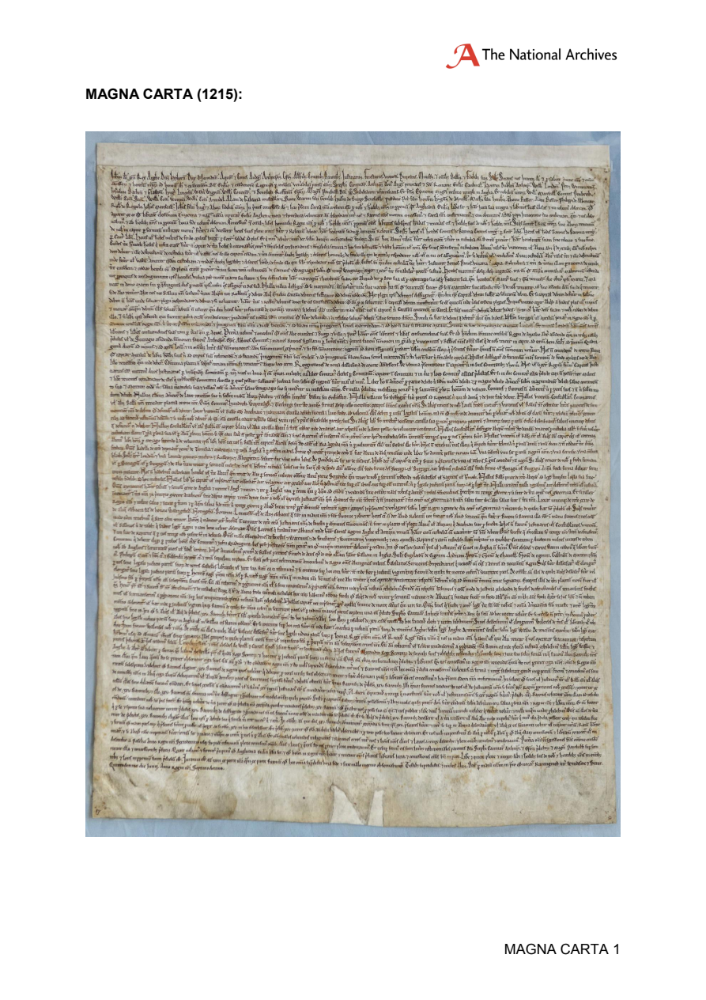
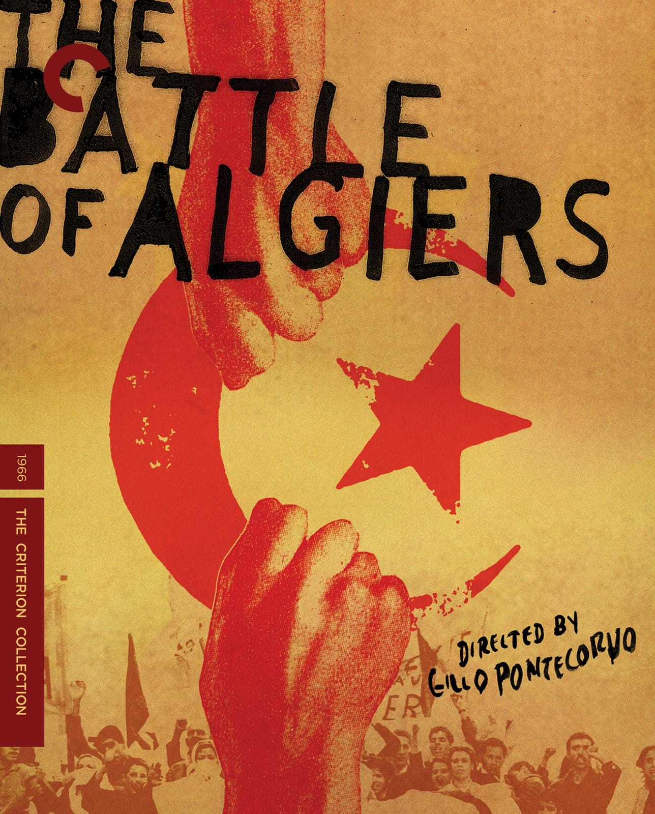

2:00:59 · 14 OPERE
Perché in così tanti scelgono di parteggiare per Hamas? Conversazione con Paola Kafira.
Il filo del discorso
Dr Divago conversa con Paola, presentata nel catalogo come Paola Kafira, intorno alla domanda polemica del titolo. Paola interpreta il sostegno che attribuisce a Hamas come incontro fra antisemitismo, paura, interessi e ricerca di un’identità di vittima; Dr Divago insiste sull’industria culturale e sulla perdita di autonomia del giudizio. I due concordano nella condanna del 7 ottobre e nell’appoggio a Israele, ma divergono sull’uso della categoria comunismo per descrivere movimenti e comportamenti contemporanei. Sono le loro spiegazioni politiche: il colloquio non è un’indagine rappresentativa sui sostenitori dei diritti palestinesi e non dimostra che essi coincidano con i sostenitori di Hamas. Il discorso alterna letture del Corano e richiami agli hadith, racconti di messaggi ricevuti, episodi di violenza e discussioni sui social. Paola descrive minacce e timori che dichiara di incontrare nella propria attività; Dr Divago considera l’adesione a formule precostituite un problema culturale ed etico. I termini clinici e gli insulti impiegati dai parlanti vengono mantenuti sul piano della polemica, senza trasformarli in diagnosi di persone o gruppi religiosi e politici. La parte centrale amplia il confronto alla responsabilità dei media, all’istruzione e al rapporto fra parole e realtà. Pasolini, Arendt, Manzoni e Lifton offrono riferimenti letterari e teorici; il film tratto da Una serie di sfortunati eventi illustra per Dr Divago l’incapacità di riconoscere un antagonista sotto i suoi travestimenti. I richiami a Algeria, Einstein e storia italiana mostrano quanto il ragionamento dipenda dalle ricostruzioni storiche: le note separano le analogie proposte dalle correzioni necessarie, comprese la natura coloniale del dominio francese e le stragi naziste nel Mezzogiorno. Nell’ultima parte i due discutono la nuova amministrazione statunitense, il discorso di Vance a Monaco e le proposte di Trump per Gaza. Dr Divago esprime fiducia in un cambiamento politico, mentre Paola domanda quali effetti concreti possa avere. La conversazione si chiude sul compito di verificare le fonti e sulle difficoltà del dibattito. La scheda distingue opinioni e sospetti dai fatti documentati, tutela la distinzione fra civili e gruppi armati e non assume come conclusioni storiche o giuridiche le negazioni dell’occupazione o le valutazioni sul genocidio contenute nel dialogo.
I libri nel discorso

Ṣaḥīḥ Muslim
Identificazione probabile
Fotografia dell’edizione completa in sette volumi: Dar-us-Salam · sette volumi arabo-inglesi · 2007 · traduzione di Nasiruddin al-Khattab
Fotografia editoriale autentica della raccolta completa in sette volumi. Non è una singola copertina né prova che questa sia l’edizione impiegata nel filmato. L’ISBN si riferisce all’insieme.
L’interlocutrice richiama un hadith famoso unendo alberi e rocce che parlano e ultima ora. Il testo 2922 nella raccolta Ṣaḥīḥ Muslim contiene insieme fine dei tempi, pietra e albero nel racconto del combattimento contro gli ebrei. Il parallelo Bukhārī 2926 contiene ultima ora e pietra ma non alberi. Raccolta, numero e traduzione non sono pronunciati; il video offre una parafrasi polemica, non una lettura letterale. Localizzazione redazionale probabile dal motivo specifico; collazionata la traduzione inglese del singolo testo nella pubblicazione Sunnah, non un’edizione araba storica o la traduzione italiana usata nel video. 2922 è la numerazione della pagina; riferimento interno Book 54, Hadith 103 e vecchio USC-MSA41/6985 restano sistemi distinti. Il passo contiene anche l’eccezione dell’albero Gharqad, non ricordata nella parafrasi. La formulazione sulla soddisfazione o vittoria dell’Islam appartiene all’interlocutrice e non viene assunta come citazione letterale o volontà di tutti i musulmani. Fotografia dell’intera raccolta Dar-us-Salam in sette volumi, edizione 2007 non accertata nel video.
Passaggio 1:23 ↗ · Fonti e libro ↗
Manifesto del Partito comunista
Copertina: Einaudi · ET Saggi · 2014
Copertina dell’edizione Einaudi del Manifesto, che comprende anche altri scritti e materiali. Nel video il rinvio al testo resta un’allusione probabile, senza identificazione dell’edizione.
Riferimento ricavato dalla trascrizione automatica.
Passaggio 15:09 ↗ · Fonti e libro ↗
Il capitale
Copertina: Editori Riuniti · Libro primo
Riferimento ricavato dalla trascrizione automatica.
Passaggio 16:55 ↗ · Fonti e libro ↗
Corano
Copertina: BUR Classici, edizione aggiornata
Edizione con introduzione, traduzione e commento di Alessandro Bausani, a cura di Layla Mustapha Ammar. Anno della ristampa non dedotto dalla copertina; nessuna edizione attribuita al video.
Riferimento ricavato dalla trascrizione automatica.
Passaggio 24:32 ↗ · Fonti e libro ↗
Don Chisciotte della Mancia
Identificazione probabile
Copertina: Newton Compton · Vintage · edizione di riferimento
Riferimento ricavato dalla trascrizione automatica.
Passaggio 40:34 ↗ · Fonti e libro ↗
La ballata delle madri
Copertina della raccolta: Garzanti · 2001
La ballata delle madri è contenuta in Poesia in forma di rosa. L’immagine mostra la raccolta Garzanti del 2001, con prefazione di Edoardo Esposito, non un volume autonomo della poesia né l’edizione del video.
Riferimento ricavato dalla trascrizione automatica.
Passaggio 42:35 ↗ · Fonti e libro ↗
Le origini del totalitarismo (The Origins of Totalitarianism)
Identificazione probabile
Copertina: Originale inglese del 1951; versione tedesca Elemente und Ursprünge totaler Herrschaft del 1955. Copertina Einaudi, Piccola Biblioteca Einaudi 459, 2009, traduzione di Amerigo Guadagnin, introduzione di Alberto Martinelli e saggio di Simona Forti, LXXXII e 710 pagine, ISBN 9788806200640.
Immagine autentica dell’opera, controllata visivamente; l’edizione di riferimento non è attribuita al filmato.
Riferimento ricavato dalla trascrizione automatica.
Passaggio 45:13 ↗ · Fonti e libro ↗
I promessi sposi
Identificazione probabile
Copertina: BUR · 1998 · introduzione di Guido Bezzola
Immagine autentica dell’opera, controllata visivamente; l’edizione di riferimento non è attribuita al filmato.
Riferimento ricavato dalla trascrizione automatica.
Passaggio 48:33 ↗ · Fonti e libro ↗
Magna Carta (1215)
Riproduzione istituzionale della Magna Carta del 1215: Documento del 1215 · riproduzione nel fascicolo istituzionale The National Archives, Magna Carta Lesson 3, pagina 1
Riproduzione integrale della pagina del fascicolo che mostra la pergamena. Non copertina, non manoscritto del 1679 e non fotografia dichiarata di un esemplare materiale identificato dal video.
Riferimento ricavato dalla trascrizione automatica.
Passaggio 58:30 ↗ · Fonti e libro ↗
La battaglia di Algeri (The Battle of Algiers)
Identificazione probabile
Criterion Collection · copertina dell’edizione home video del film 1966: Criterion Collection · copertina dell’edizione home video del film 1966
Copertina Criterion disegnata da Neil Kellerhouse per la riedizione home video, non locandina originale del 1966 né libro storico. Edizione posseduta o vista dal relatore non identificata.
Riferimento ricavato dalla trascrizione automatica.
Passaggio 1:01:10 ↗ · Fonti e libro ↗Lemony Snicket’s A Series of Unfortunate Events (Lemony Snicket – Una serie di sfortunati eventi)
Identificazione probabile
Paramount · immagine promozionale ufficiale tedesca del film 2004: Paramount · immagine promozionale ufficiale tedesca del film 2004
Artwork ufficiale del film con Jim Carrey, titolo tedesco Rätselhafte Ereignisse. Non copertina dei romanzi, non immagine della serie Netflix; versione linguistica del video non accertata.
Riferimento ricavato dalla trascrizione automatica.
Passaggio 1:11:38 ↗ · Fonti e libro ↗
Gorgia
Identificazione probabile
Copertina: Gorgia, Bompiani, giugno 2001, a cura di Giovanni Reale, testo greco a fronte, 384 pagine, ISBN 9788845291111. Copertina ufficiale blu, bianca e verde acqua con titolo e autore; edizione di riferimento non identificata nel video.
Immagine autentica dell’opera, controllata visivamente; l’edizione di riferimento non è attribuita al filmato.
Il relatore nomina Socrate e rielabora la preferenza per essere corretto quando si sbaglia, contrapponendola all’inveire. Nel Gorgia 457d–458a Socrate contrappone ira e insulti nella disputa al beneficio di essere confutato e liberato da opinioni false. La combinazione dei due aspetti sostiene il rinvio probabile, non una citazione letterale.
Passaggio 1:15:24 ↗ · Fonti e libro ↗
Thought Reform and the Psychology of Totalism. A Study of “Brainwashing” in China
Identificazione probabile
Copertina: University of North Carolina Press · ristampa 1989 con nuova prefazione
Copertina autentica scaricata dal servizio immagini collegato direttamente al catalogo UNC Press per ISBN 9780807842539. Titolo completo, autore e nuova prefazione sono visibili. Si distingue la ristampa cartacea 1989 dalla prima Norton 1961 e dall’ebook 2012 ISBN 9780807882887; quest’ultimo ISBN non è assegnato all’immagine cartacea. Immagine conservata intera.
Riferimento ricavato dalla trascrizione automatica.
Passaggio 1:53:34 ↗ · Fonti e libro ↗
The Critical Qur’an. Explained from Key Islamic Commentaries and Contemporary Historical Research
Identificazione probabile
Copertina: Bombardier Books / Post Hill Press, hardcover ISBN 9781642939491, uscita catalogata 3 maggio 2022, 560 pagine; alcuni cataloghi riportano copyright 2021.
Immagine autentica dell’opera, controllata visivamente; l’edizione di riferimento non è attribuita al filmato.
Riferimento ricavato dalla trascrizione automatica.
Passaggio 1:57:11 ↗ · Fonti e libro ↗Fonti e approfondimenti (20)
- archives.mod.gov.il ↗
- bingdev.binghamton.edu ↗
- bundesverfassungsgericht.de ↗
- einstein-virtuell.mpiwg-berlin.mpg.de ↗
- history.state.gov ↗
- ia800704.us.archive.org ↗
- ihl-databases.icrc.org ↗
- it.wikisource.org ↗
- legislature.camera.it ↗
- palestine.un.org ↗
- sunnah.com ↗
- sunnah.com ↗
- uncpress.org ↗
- elysee.fr ↗
- icc-cpi.int ↗
- icj-cij.org ↗
- psychiatry.org ↗
- quirinale.it ↗
- un.org ↗
- un.org ↗